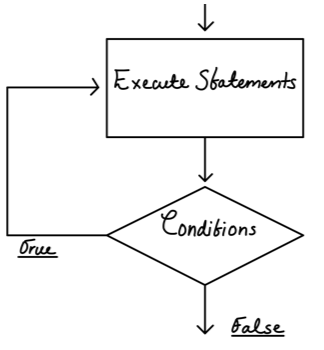
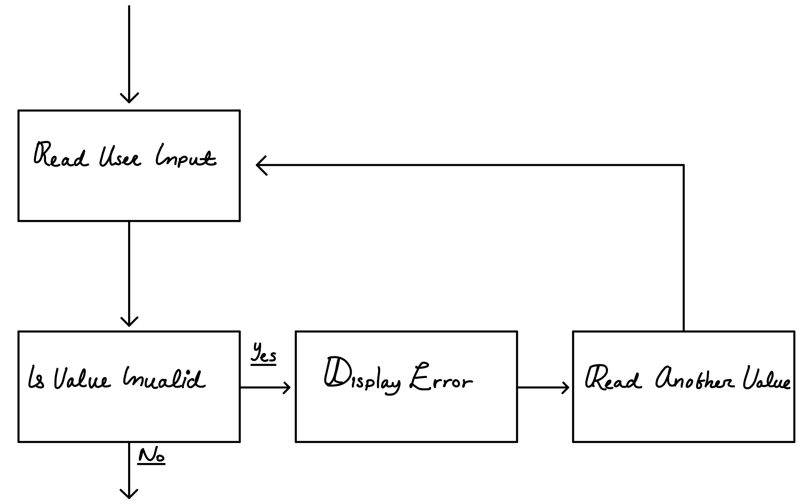

Loops
This function allows us to perform the same function or statements until the condition is met. This action is called an
iteration. Everytime we run the same statements due to a loop being true, it’s called an iteration.
C++ has three looping control structures:
- The while loop
- The do-while loop
- The for loop
Loops will never iterate if condition is false; therefore, it is advised that your program starts with the condition being true if possible.
It is kind of similar to the if/else statements.
While loop
The loop will stop once the condition has been broken or when the condition is no longer true.#include <iostream>
using namespace std;
int main(int argc, char *argv[]) {
int var = 0;
while(var < 10){
cout << "The condition is met because " << var << " is lower than 10." << endl;
var++;
}
cout << "The condition has been broken at this line of code.";
return 0;
}
The program above would output the following:
The condition is met because 0 is lower than 10.
The condition is met because 1 is lower than 10.
The condition is met because 2 is lower than 10.
The condition is met because 3 is lower than 10.
The condition is met because 4 is lower than 10.
The condition is met because 5 is lower than 10.
The condition is met because 6 is lower than 10.
The condition is met because 7 is lower than 10.
The condition is met because 8 is lower than 10.
The condition is met because 9 is lower than 10.
The condition has been broken at this line of code.
The principle of a while loop is the following:
while(condition){
perform statement;
modify condition;
}
Remember that we must modify the condition in order to break the loop at some point. This way we can easily avoid an infinite loop, which would make the program run indefinitely.
The condition can be a simple count variable(also known as a counter) that we increment or decrement every iteration. The count variable would let us choose how many times we have chosen to iterate the loop. However, it could also be used for other purposes. A counter is a variable that is regularly incremented or decremented each time a loop iterates.
Letting the user control the loop
Allowing the user to input value into a max variable could allow the user have some control over the times a loop iterates.
For example:
count << “Enter max: “;
counter = 0;
while(counter<=max){
counter++;
}
The loop will be end once the condition no longer is true or in other words, once the counter variable is greater than the max variable, which is user-defined.
Do-while loop
The do-while loop is a post test loop, which means its expression is tested after each iteration.
do{
//STATEMENTS
}while(condition);
The do-while loop executes statements, then condition is tested. If the condition ends up being true, the statements will be executed again, following the same patterns until the condition is no longer met.
You might want to use this loop if you want to ensure that the loop’s body are executed at least once.
Take a look at the following flow chart to have a better understanding of the structure of the do-while loop:

For loop
The for loop is a pre-test loop that combines the initializiation, testing, and updating of a loop control variable also known as a counter; all included within a single loop header.
This is a more compact version of the while loop.
The for loop must posses three things:
- Counter initialization
- Comparison of counter to check for condition
- Increment counter
The for loop works great with count-controlled loops.
For loop model:
for(initialization; test; update){
statement;
statement;
}
Avoid modifying the counter variable in the body of the loop.
Also remember that the
scope of the counter variable is only limited to the body of the for loop.
User controlled for loops
The user might be able to control some aspects of the for loop by assigning a value to a max variable.
for(int x=0; x<=max; x++){
statement;
statement;
}
The max variable will allow the user to control the number of times a loop iterates.
Using multiple statements in the initialization and update expressions:
The following style of for is allowed but not recommended.
for(int x=0, y=0; x<=5; x++, y++){
statement;
statement;
}
Infinite loops
To prevent yourself from having this awful error, make sure the condition will eventually become false.
The next snippet would cause an infinite loop since the condition would initially become true, and there are not statements within the loop that would eventually make the condition false.
int var = 0;
while(x<10){
cout << x << endl;
}
The following example would also create an infinite loop.
while(x=1){
//STATEMENTS
}
Notice that the condition would be a flag bool value; remember that any non-zero value is evaluated as true.
While loop for input validation
The while loop can be used to create input routines that iterate until acceptable data is entered. In other words, we can
filter good input.
“Garbage in, garbage out” -J. Kent
One should never assume that the user has followed the instructions.
Take a look at the following program which validates the input through a loop.
#include <iostream>
using namespace std;
int main(int argc, char *argv[]) {
int var;
cout << "Enter a number in the range 1-100: ";
cin >> var;
while((var < 1)||(var > 100)){
cout << "ERROR!" << endl << "Enter a number in the range 1-100: ";
cin >> var;
}
return 0;
}
The following is a simulation of the program:
Enter a number in the range 1-100: 345ERROR!
Enter a number in the range 1-100: 345
ERROR!
Enter a number in the range 1-100: 323
ERROR!
Enter a number in the range 1-100: 12
Take a look at the next diagram for a better understanding of filtering data input:

Keeping a running totals
A running total is a sum of numbers that accumulates with each loop iteration. The running totals is called the accumulator.
The accumulator is great for averages.
avrg = total/max;
Sentinels
A sentinel is a special value that marks the end of a list of values. The sentinel signals that there are no more values to enter. Once the user enters the sentinel, the loop ends.
while(num!=-999){
statement;
statement;
}
The user will keep looping until the sentinel is entered.
Deciding which loop to use
Although most repetitive algorithms can be written with any of the three types of loops, each works best in different situations.
The while loop
- Pre-test
- Does not iterates if false
- Works great with sentinels
The do-while loops
- Post-test
- Iterates at least once
- Good for menus that require repetition
The for loop
- Pre-test
- Built-in initialization, testing, and updating
- Great when exact number of iterations is known
Nested loops
A loop that is inside another loop is called a nested loop(It is possible to nest one loop inside another loop).
while(condition){
statement;
while(condition){
statement;
statement;
}
}
Nested loops are used when, for each iteration of the outer loop, something must be repeated a number of times. In other words, for each something, we must add/assign/put each something. For example, for each student we must add up each test score to find the student’s score average. Just remember that the inner loop iterates much faster than the outer loop.
Breaking out of a loop
The
break statement causes a loop to terminate much earlier; however, it is recommended that a loop should terminate naturally and should be driven by the condition. This is an explicit way of ending a loop.
We use the same break statement that is used in the switch statement.
for(int x=0; count<=5; x++){
if(x==3)
break;
}
The break statement only breaks that loop in which it is located. If placed on a nested loop, it will only break the inner loop, and not the outer.
The continue statement
- The continue statement causes a loop to stop its current iteration and begin the next one.
- The statement causes the current iteration of a loop to end immediately.
This is similar to the break statement; however, unlike the break statement, the loop will continue, just the current iteration will be omitted.
#include <iostream>
using namespace std;
int main(int argc, char *argv[]) {
for(int x=0; x<=23; x++){
if(x==3){
continue;
}
cout << "X: " << x << endl;
}
return 0;
}